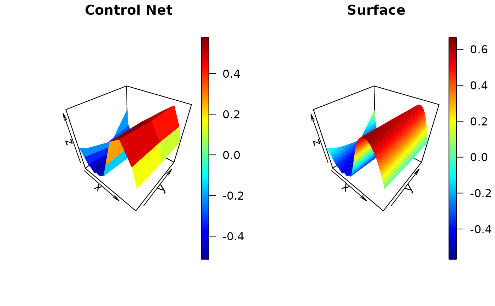

Get Two-Dimensional Control Net and Surface from n-dimensional Control Nets
Arguments
- x
a
cpr_cnobject- margin
an integer identifying the marginal of the control net to slice along. Only used when working
xis acpr_cnobject.- at
point value for marginals not defined in the
margin. Only used whenxis acpr_cnobject. Expected input is a list of lengthlength(attr(x, "bspline_list")). Entries for elementsmarginalare ignored. If omitted, the midpoint between the boundary knots for each marginal is used.- n
the length of sequence to use for interpolating the spline function.
Value
a list with two elements
- cn
the control net
- surface
a data.frame with three columns to define the surface
Examples
# \donttest{
## Extract the control net and surface from a cpr_cn object.
a_cn <- cn(log10(pdg) ~ btensor(list(day, age, ttm)
, df = list(15, 3, 5)
, bknots = list(c(-1, 1), c(45, 53), c(-9, -1))
, order = list(3, 2, 3))
, data = spdg)
cn_and_surface <- get_surface(a_cn, n = 50)
str(cn_and_surface, max.level = 2)
#> List of 2
#> $ cn :'data.frame': 45 obs. of 3 variables:
#> ..$ Var1: num [1:45] -1 -0.94 -0.829 -0.726 -0.619 ...
#> ..$ Var2: num [1:45] 45 45 45 45 45 45 45 45 45 45 ...
#> ..$ z : num [1:45] -0.0363 -0.0704 -0.1904 -0.3311 -0.3755 ...
#> $ surface:'data.frame': 10000 obs. of 3 variables:
#> ..$ Var1: num [1:10000] -1 -0.98 -0.96 -0.939 -0.919 ...
#> ..$ Var2: num [1:10000] 45 45 45 45 45 45 45 45 45 45 ...
#> ..$ z : num [1:10000] -0.0363 -0.0455 -0.0571 -0.0712 -0.0878 ...
old_par <- par()
par(mfrow = c(1, 2))
with(cn_and_surface$cn,
plot3D::persp3D(unique(Var1),
unique(Var2),
matrix(z,
nrow = length(unique(Var1)),
ncol = length(unique(Var2))),
main = "Control Net")
)
#> Warning: no DISPLAY variable so Tk is not available
with(cn_and_surface$surface,
plot3D::persp3D(unique(Var1),
unique(Var2),
matrix(z,
nrow = length(unique(Var1)),
ncol = length(unique(Var2))),
main = "Surface")
)

par(old_par)
#> Warning: graphical parameter "cin" cannot be set
#> Warning: graphical parameter "cra" cannot be set
#> Warning: graphical parameter "csi" cannot be set
#> Warning: graphical parameter "cxy" cannot be set
#> Warning: graphical parameter "din" cannot be set
#> Warning: graphical parameter "page" cannot be set
# }